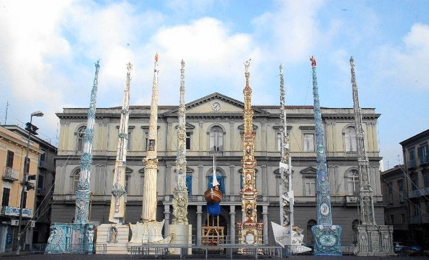

ECONOMIA NOLANA:
Nola era il cuore della Campania Felix, nel II secolo ritroviamo una produzione massiccia di cereali, ma soprattutto delle nocciole e olive.
In questo periodo si intensifica la produzione di vini, grazie alla vicinanza al Vesuvio, che venivano commerciati in tutto il Mediterraneo attraverso il porto di Pozzuoli, questi erano tra i più pregiati dell’Impero Romano e il più famoso era il vitigno greco, considerato uno dei più antichi d’ Italia. Riguardo all’economia odierna, Nola presenta il CIS (Centro Integrato Servizi), il maggiore sistema di distribuzione commerciale Business-to-Business d’Europa, e il Vulcano Buono, un vasto Centro Commerciale inaugurato nel 2007 dall’architetto Renzo Piano, è dotato di 5 ingressi: Capri, Sorrento, Amalfi, Positano e Ischia
ESTENSIONE:
Nel II secolo a.C. Nola era caratterizzata da un vasto territorio agricolo, l’estensione completa era di circa 40 ettari. Le ricerche archeologiche hanno rivelata un’area urbana con abitazioni e necropoli, quest’ultime situate fuori dalle mura stabilendo con certezza il perimetro urbano. La città era difesa da una possente cinta muraria di circa 3 chilometri e questa definiva anche lo status di cittadino, infatti vivere all’interno delle mura significava far parte della città e partecipare ai culti religiosi. Proprio per questa immensità, Nola era considerata una delle città più grandi e meglio fortificate della Campania, tanto da essere definita una piccola Roma dallo storico greco Polibio che nelle sue "Storie" descrive Nola come un centro dotato di tale ricchezza da poter competere con quella dell’Urbe.
STORIA E TRADIZIONI
A Nola nel 1548 nasce Giordano Bruno, il suo nome era Filippo, ma assunse il nome di Giordano entrando nel convento di S. Domenico a Napoli. Fu filosofo e scrittore Italiano; sostenne l’esistenza di infiniti mondi e fu il precursore di una nuova idea di conoscenza, intesa come ricerca e attività critica. Bruno fu condannato al rogo dopo diversi anni di processo per le sue idee; per lui la libertà di pensiero valeva più della vita stessa. Morì a Roma il 17 febbraio del 1600. Nel cuore di Nola ritroviamo il luogo simbolo dedicato al filosofo, Piazza Giordano Bruno, opera di Raffaele De Crescenzo. Fu inaugurata nel 1867 per celebrare il coraggio del libero pensiero proprio nella città natale di Bruno.
Una tradizione Nolana importante è la Festa dei Gigli, una secolare celebrazione religiosa in onore di San Paolino, riconosciuta dal 2013 come Patrimonio Immateriale dell’Umanità. Si festeggia la domenica successiva al 22 giugno ogni anno. Con questa festa i Nolani ricordano il ritorno in città di Paolino dalla prigionia in Africa. I Nolani, secondo la tradizione, accolsero l'amato Paolino con fiori, appunto i gigli, e in memoria di questo evento la città porta in processione delle grandi costruzioni in legno rivestite di cartapesta, ovvero i Gigli.
I Gigli sono 8: si presentano come obelischi di legno con un’altezza di 25 metri, il rivestimento è fatto di stucco e cartapesta e ad ogni Giglio corrisponde una corporazione di arti e mestieri quali: ortolano, fabbro, calzolaio, bettoliere, sarto, panettiere, salumiere, beccaio.

Festa dei Gigli di Nola
Foto di Michael LoCascio (2010) - Tratta da Wikipedia
← TORNA ALLA MAPPA